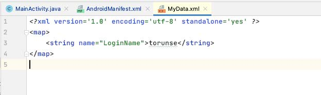

Android applications use what's called the Sandbox model. Applications are installed somewhere on the phone although the exact location doesn't matter. Apps can not access any files or folders outside of where they have been installed. You can only creates files and folders within your own directory . You can query where the app has been installed by calling the function getFilesDir(), which returns a File object representing the directory where the app is running from, called the Sandbox.
To open a file in the Sandbox, you call openFileOutput(String name, int mode); The String name parameter is the filename to create, and the int mode should be Context.MODE_PRIVATE; This means that only the app that created the file can open it.
You can save a bitmap object to the disk using the code. Go ahead and modify your onActivityResult() function to save the bitmap that is returned:
FileOutputStream fOut = null;
try { fOut = openFileOutput("Picture.png", Context.MODE_PRIVATE);
mBitmap.compress(Bitmap.CompressFormat.PNG, 100, fOut);
fOut.flush();
fOut.close();
}
catch (FileNotFoundException e)
{ e.printStackTrace();
}
Then in your onCreate() function, you can test if a file exists (if you already have a bitmap saved) with the code:
File file = new File( getFilesDir(), filename);
if(file.exists())
{
}
If the file exists, then y ou can read it within the if() statement:
Bitmap theImage = BitmapFactory.decodeFile(filename);
Now modify your onCreate() function to check if your picture file exists, and if so, then load it into the bitmap object. You can then set the src of y our ImageView to the bitmap that you loaded:
myImageView.setImageBitmap( Bitmap bmp );
Now when you take a picture for your profile picture, it should save it to the device so that the next time you run your application, the picture gets loaded immediately when you come to your second activity.
There is also a method to save data using an object called SharedPreferences. This is similar to an Intent object where you save data associated with a variable name. Go back to your MainActivity.java file, and let's write code to save the login email address that the user types in so that the next time they run the application, the email address can be pre-filled from what was saved the previous time. First, create a SharedPreferences object using the code:
SharedPreferences prefs = getSharedPreferences("MyData", Context.MODE_PRIVATE);
The parameter "MyData" is the name of the file that will be opened for saving, and the Context.MODE_PRIVATE means that only the application that created the file can open it. There might already be data saved in the file, so we can ask to see if anything is saved using a variable name:
prefs.getString("VariableName", String defaultValue);
It's possible that there's nothing in the file associated with the name "VariableName", so the par ameter defaultV alue is there as a backup in case "VariableName" is missing in the data. In our case, if the user has never the app before, we don't want to pre-load the email address, so just use the empty string: "".
String emailAddress = prefs.getString("LoginName", "");
Now in your onCreate() function, set the text of the email address EditText to be the emailAddress variable that was just loaded.
Lastly, if the user clicks the Login button, we want to save the email address that is typed in to the EditText. For that, you need an SharedPreferences.Editor object, which you can get from your SharedPreference object from above:
SharedPreferences.Editor editor = prefs.edit();
Now you can save the string to your MyData file that you have opened using the command:
editor.putString(String name, String value);
Here we want to use the variable name "LoginName", and the value should be the string that you should ha ve gotten from the email address EditText. However, the values have not yet been written to disk. You might want to save several variable names and values at the same time, so Android is optimized to write efficiently by putting all of the name/value pairs first, and then your last line of code should be:
editor.apply();
The apply() function writes the data in a background thread so that the GUI doesn't slow down. That means that it will take several milliseconds for the data to be written to the disk, so if you were to immediately open the SharedPreferences file again, it might not be written yet. However if you transition to a new Activity using the startActivity() function, the data will be written by the time the onCreate() function of the next Activity is called. Go ahead now and debug your application now and type in an email address in the EditText, and click the Login button. This will take you to your second page. Restart your application by hitting the debug button again and this time the email address you typed in should be loaded back into the email address EditText using the code you just wrote. If y ou want to look inside the "MyData" file that stores your SharedPreferences, click on the button "Device File Explorer" on the right side of Android Studio:
Open up the "/data/data/" folder , and you should see a folder with your package name: algonquin.cst2335.<your algonquin id>. Open up that folder , and you will see a "shared_prefs" folder , with your MyData.xml file:
If you double-click on the MyData.xml file, you should see how the data are stored in your SharedPreferences:

Notice here that there is a <string> tag because you ran the code editor.putString("LoginName", emailAddress); If you were to put something else like putInt( ), putFloat():
and then run your app, you will see the MyData.xml file looks like this:
The XML file stores the data type of the variable along with the value. So to retrieve these values, you would use the code:
prefs.getFloat("Hi", 0); //the 0 specifies what to return in case the variable "Hi" is not in the file.
prefs.getInt("Age", 0); //the 0 specifies what to return in case the variable "Age" is not in the file.
Lastly, go to your SecondActivity.java, and write the onPause() function, so that you can run some code whenever the the Activity is going off the screen. In the onPause() function, save the value of the phone number that is currently entered in the EditText on that page, using the same SharedPreferences file that you used in MainActivity.java. Then in the onCreate() function of SecondActivity.java, load the SharedPreferences and try to retrieve the phone number that is saved, if there is any.
This is the end of this week's material. You should commit all of your work onto the "Week4" branch, and then push it to your Github repository. Then take a screenshot of the code and submit that picture on Brightspace under the Assignments tab in the Lab 4 submission link.
| Item | Marks |
|---|---|
| You lab starts to a MainActivity that looks like the picture in part 1 of this week's materials, with an email address and password EditText | (1 mark) |
| The password EditText uses the password inputType | (1 mark) |
| The email address is loaded from SharedPreferences | (1 mark) |
| If you type in a new email address and click "Login", that new values is saved to your SharedPreferences file, and you can see the changes in the Device Explorer window. | (1 mark) |
| The Login page goes to your Second Activity, and shows the email address from the first page that is send over using the Intent object. | (1 mark) |
| The telephone number is loaded and saved using SharedPreferences | (1 mark) |
| The ImageView loads a saved bitmap file if there is one. | (1 mark) |
| Clicking on the "Call number" loads a phone call intent to call the number written in the EditText. | (1 mark) |
| Clicking on the "Change Picture" loads the camera activity that takes a new picture. Taking a picture and selecting the "Ok" or Checkmark button returns the bitmap which is then changed in the onActivityResult() function in SecondActivity, as well as saved to disk | (2 marks) |
| Taking a picture and canceling the photo does not replace the picture in SecondActivity. | (1 mark) |